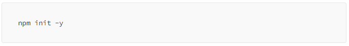
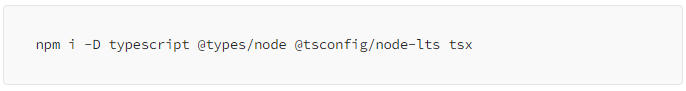
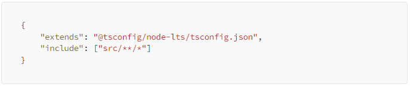
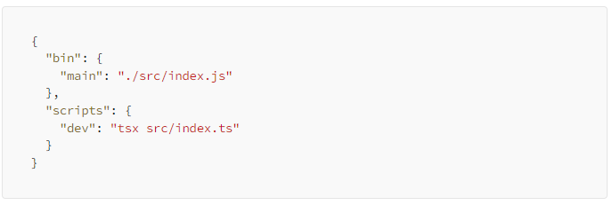
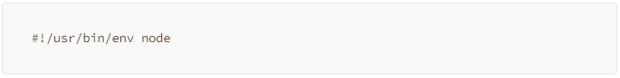

A instalação do Node runtime, instala também o NPM, Node Package Manager, com o npm podemos gerenciar pacotes do NodeJS, iniciar novos projetos, instalar bibliotecas, e etc.
Para iniciar um novo projeto usaremos um comando do npm no nosso terminal.

Isso iniciará um novo projeto node e criará um arquivo package.json, nele temos nossas dependências, configurações e mais informações sobre nosso projeto.
Agora podemos instalar o Typescript no nosso projeto como uma dependência.

Explicando o comando acima:
i — Install / instalar a dependência.
-D — Developer / instala a dependência como desenvolvedor.
@types/node — Tipagens do Node pro Typescript.
@tsconfig/node-lts — Configuração do Typescript pro Node-LTS.
tsx — Dependência para rodar nosso arquivo Typescript sem compilar.
Configurando Typescript
Agora configuraremos o nosso Typescript pro projeto, primeiramente criamos um arquivo tsconfig.json, e então digitaremos o seguinte.

Explicando o codigo acima:
extends — Isso extende uma configuração tsconfig, no caso a que instalamos antes.
include — Define quais arquivos e pastas devemos compilar.
Configurando Nosso Script
O NPM permite a execução de scripts sem precisar instalar através do NPX, mas antes de usar o NPX devemos configurar nosso package.json e criar um arquivo index.ts na nossa pasta src.

Acima criamos um script para nosso ambiente de desenvolvimento, e um pro NPX.
Agora colocaremos um código base pro NPX no nosso index.ts.

E com isso terminamos a configuração do nosso projeto.